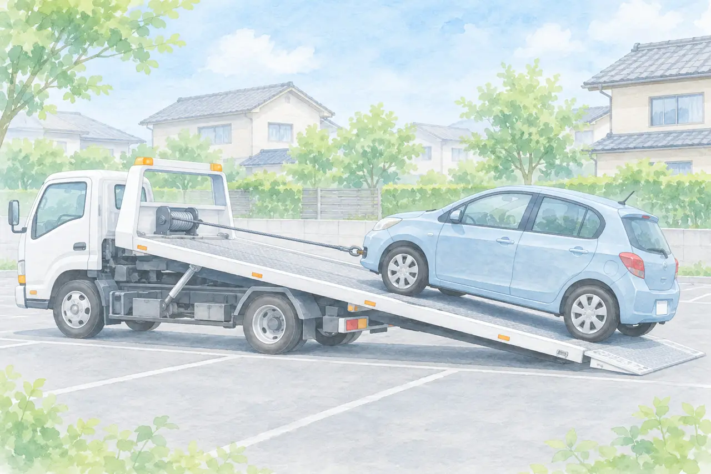

車の鍵が見つからない方へ
車の鍵をなくしたけど廃車できる？
鍵を作り直す前に知っておきたいこと
公開
こんにちは、東京都足立区江北で自動車解体・廃車買取をしている「大崎商店 環七店」です。
「車を手放したいのに、鍵が見つからない」
「ディーラーで鍵を作り直さないと、廃車にできないのかな」
そんなとき、鍵を作り直す前に、廃車の依頼先にご相談ください。
この記事の要点
- 車の鍵をなくしても、車は処分できます。 鍵は廃車手続きの提出物に含まれません。
- 鍵を作り直す前に、廃車の依頼先へご相談ください。
- 電話では、「鍵がない」ことを、そのまま伝えてください。 引き取れるかどうかは、車の状態と置き場所で決まります。
① 鍵がないと、廃車にできない？
廃車手続きの提出物に、車の鍵は含まれません。 車検証やナンバープレートなど、必要なものは車の種類や手続きによって異なります。
ただし、鍵がないと、困ることがあります。
- 車のドアが開けられず、車の中の荷物を取り出せない
- ハンドルが固定されたままで、車を動かしにくい
- 車を動かせないと、運ぶ方法が限られる
② 鍵を作り直す前に、これを試してください
鍵が見つからないときは、スペアキーも含めて次の場所を確認してみましょう。
- 家の引き出し、玄関の鍵置き場、カバンの中
- スペアキー（予備の鍵）の保管場所：購入したときに、2本もらっていることがあります
- ご家族が持っていないか：家族と共用している車の場合です
- 車の中：ドアが開いているなら、シートの下やドアポケットも見てください
見つからなければ、鍵を作り直す前に、車を手放したい旨を依頼先に伝えてください。
③ 見つからなかったら：電話で伝えること
探しても見つからないときは、そのまま、依頼先に伝えてください。 依頼先によって、引き取れるかどうかは違います。
- 鍵がないこと（スペアキーもないか）
- 車の状態。ドアが開くか、車内に取り出したい荷物があるかを、分かる範囲で伝えます。
- 置いてある場所と、道の広さ。駐車場の入口や車の周囲に作業スペースがあるかも伝えます。
- 車検証とナンバープレートの有無。手元にあるものを確認し、見つからない場合はその旨を伝えます。
「動かない車」の運び方や、電話で伝えること全体は、動かない車を運ぶにはの記事で、くわしく紹介しています。
車検証も見つからない場合は、車検証をなくしたけど廃車できる？の記事も、あわせてご覧ください。
④ 大崎商店の場合：鍵のない車

車を手放すときは、鍵がなくても大崎商店へご相談いただけます。 車検証やナンバープレートの有無を伺い、車の種類や名義に応じて必要な書類をご案内します。
まず、環七店（03-3854-4141）へお電話ください。鍵がないことと、車の状態、置いてある場所を伺い、引き取れるかどうかをご案内します。
動かない車は、ワイヤーで積載車の荷台に引き上げて積むこともできます。道が狭い場合や積み込む場所が取れない場合は、引き取りをお断りすることがあります。現場で積み込めないと分かった場合も、そのことで追加費用はいただきません。
大崎商店では、
- 解体費用・手続き代行費用・印紙代は、別請求しません
- 足立区内は、引き取り無料
- 足立区外も、買取価格がつかない車は、環七店から片道約30分圏内は引き取り無料（目安です）
- 買取価格がつく車は、圏外でも、所在地と車の状態によっては無料で引き取り（事前にご案内します）
- 車によっては、引き取り当日その場で現金買取もできます
- 車のお持ち込みは、どこからでも歓迎（基本は環七店。日時は、事前にお電話でご相談ください）
引き取った車を解体するかどうかは、車の状態を確認したうえで大崎商店が判断します。解体作業は、解体業の許可を受けた入谷店で行います。
ご自分の車の場合が気になったら、お気軽にご相談ください。車の状態と置き場所を伺い、ご案内します。
電話で相談する03-3854-4141よくある質問
Q. 鍵がないと、廃車の手続きができませんか？
A. 鍵がなくても車は処分できます。車検証など、廃車手続きに必要なものは車の種類や名義に応じてご案内します。
Q. 鍵がなくて、エンジンもかかりません。
A. 鍵がないことを環七店へお伝えください。車の状態と置き場所を伺い、積載車で引き取れるかをご案内します。
Q. 車の中に荷物が残っています。
A. 車内に必要なものがあり、ドアを開けられない場合は、引き渡し前に環七店へお知らせください。解体の際、車内に残ったものは基本的に車と一緒に処分します。
Q. スペアキーが見つかったら、どうすればいいですか？
A. 引き取りの日までに見つかったら、電話でお知らせください。
Q. 現場に来てもらってから、断られることはありますか？
A. 積載車が入れない道や、車を載せられない場所では、お断りすることがあります。その場合も、追加の費用はいただきません。電話で、車の状態・場所・道の広さを先に伺い、断る事態をできるだけ減らします。
鍵が見つからなくても、あきらめないでください
電話で相談する 03-3854-4141メールで相談する（フォーム）大崎商店 環七店
大崎商店 環七店
電話：03-3854-4141
〒123-0872
東京都足立区江北7丁目1−3
営業時間：月〜土 10:00〜18:00
休業日：日曜・祝日
環七沿い／舎人ライナー
西新井大師西駅
大崎商店 入谷店
電話：03-3899-2837
〒121-0836
東京都足立区入谷7丁目5−11
営業時間：月〜土 9:30〜17:30
休業日：日曜・祝日・第2土曜
鍵がない車のご相談は、環七店へ。 鍵がないこと、車の状態、置いてある場所をお伝えください。
くわしい条件と出典（読みたい方向け）
- 廃車の手続きで用意するもの。解体後の廃車手続きには、車検証やナンバープレートなどが必要です。印鑑証明書など、追加で用意する書類は車の種類や申請方法によって変わります。運輸支局・普通車の永久抹消登録／軽自動車検査協会・解体返納
- 引き取りの条件：積載車は1台で、複数の引き取りを同時には行っていません。すぐに伺えるかは、そのときの仕事の状況によります。到着の日時は、電話で事前にご案内します。引き取りの範囲は、出張引き取りの対応エリアの記事をご覧ください。
- 車検証の所有者の確認：所有者がディーラーやローン会社の場合は、ご自身だけでは進められないことがあります。電話で、車検証の所有者と使用者を伺います。くわしくは、ローンが残っている車は廃車できる？の記事をご覧ください。
- 鍵の受け渡し：鍵がある場合の受け渡しや、引っ越し後の引き取りは、引っ越しで車を手放すときの記事をご覧ください。
※掲載画像はAIで生成したイラストです。実際の店舗・人物・車両とは異なります。
☎ 電話で相談する 03-3854-4141›